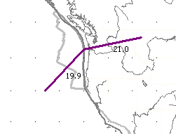
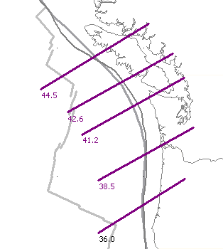
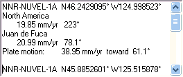
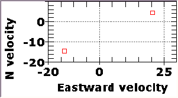

JdF-NA Subduction Zone Velocity
Two plate motions on  Plate rotation
Plate rotation
 |
Velocity of the North America-Juan de Fuca trench. One plate moves NE at 21 mm/yr, and the other SW at 19.9 mm/year. This is in the Nuvel No Net Rotation reference frame. The memo box shows which plate is which. This shows the motions of the two plates; the resultant motion between the two plates is the vector connecting the heads of the two vectors. |
 |
Resultant vector instead of the two plate motions. Select this with the Resultant vector checkbox on the rotation control form. |
 |
The resulting motion between the two plates is shown as 38.95
mm/year, toward 61˚ (alternatively it could be toward 241˚, depending on
which plate you selected first which will be considered stationary). This is approximately perpendicular to
the trend of the trench, which is common but not required for plate
tectonics. The JdF plate is the one moving NE. If you position yourself at the end of its vector, the distance and direction to the end of the other vector gives you the relative motion of the other plate, which in this case is to the SW. If you position yourself at the end of the NA plate vector, JdF is moving to the NW, the 61˚ given in the memo box. Because the two plates are moving toward each other, this boundary has to be a trench. |
 |
The velocity diagram plots a point to represent the velocity of each
plate in terms of the x and y vector components. South and
west are both negative. The motion between the two plates is the vector that connects the two. Its direction depends on which plate you are holding still to compute the relative motion of the other. |
Example for the Juan de Fuca ridge.
Last revised 9/20/2015